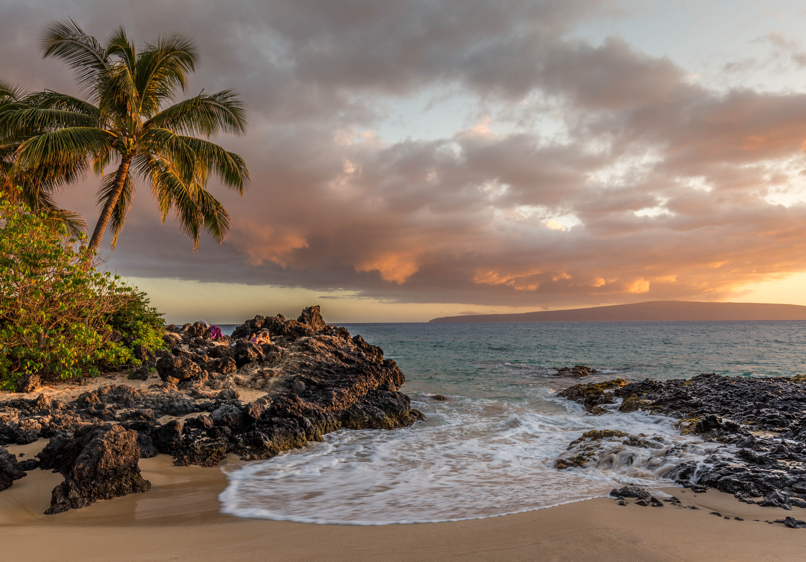

4 Major Hawaiian Islands
Exploring Hawaii
If you have stumbled upon the opportunity to explore Hawaii, consider yourself lucky. Hawaii is a beautiful destination with its own culture and traditions. Hawaii's population is a mixture of various cultures and ethnicities, creating its very own staples that make its state unique. For example, Hawaii is the only U.S. state with two official languages (English and Hawaiian). This website was created to help visitors decide which island is best for them to visit in their allotted vacation time. Looking at each island can be overwhelming, after all, they're all so great! Use this guide to help you decide which of the 4 major islands is a good choice for you and your family. To assist you in deciding which island is best for you, we will be using the "Hawaiian Vacation Guide" videos to help. This couple lives in Maui and has started a Youtube page to help those traveling to Hawaii have a great experience. Let's get started!
The state of Hawaii unique in many ways, but so is each island. The state of Hawaii has 137 islands. Many of those islands are tiny and uninhabitable, while some are available through airplane and ferry rides.

